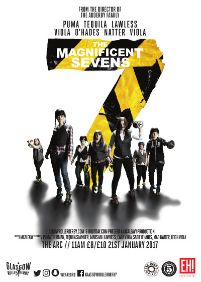
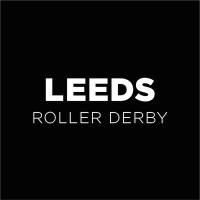
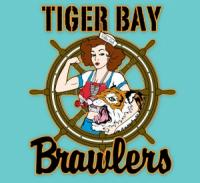
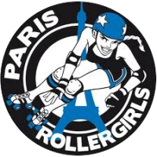
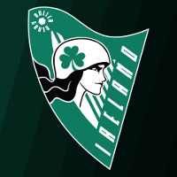
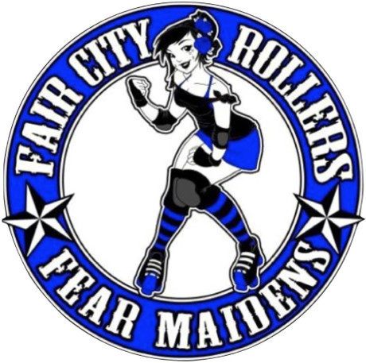
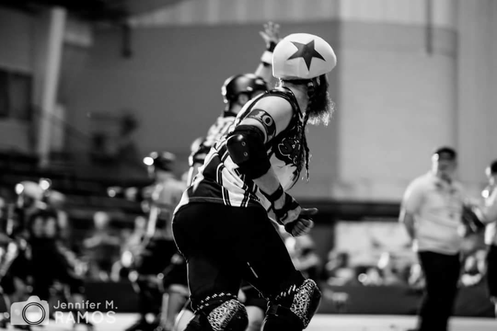
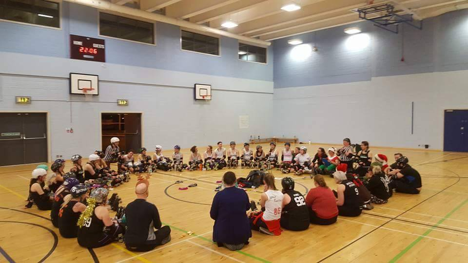

Glasgow's Magnificent 7s ride out!
As we mentioned in our January round-up, the only announced bouts in Scotland in January are in the last two weeks of the month. In fact, by far the larger event is the closer, as the 21st sees Glasgow Roller Derby bringing Derby Se7ens to Scotland for the first time.
Like Sur5al, which Glasgow have also hosted previously, Se7ens is a condensed Derby format, inspired by Rugby Sevens which is a very successful variant of the Union game - the first Sevens tournament was held by Essex Men's Roller Derby, and is now an annual event. The benefit, of course, is that you can get more teams to compete in less time, and hence possibly have a higher density of fun. It's also an ideal way for skaters to ease themselves back onto track, before the competitive season really gets going...
Experimenting with the Derby Se7ens format to add even more 7s, the Magnificent 7s event sees 7 teams of 7 skaters each play 7 minutes of derby against each other (for a total of 21 bouts, and 147 minutes) to determine the victor*.
To celebrate this inaugural issue of what might become an annual event, GRD have also worked with well-known Scottish Derby photographer, Dave McAleavy to produce this themed poster:

As is often the case with these intense formats, the event has drawn in a wide representation of skaters, with the following teams submitted:
- How The West Was Won [in Black] - Team Scotland Roller Derby's entry, an epic mixture of ARRG and GRD skaters from the National Team's Training Squad.
- Soy Division [in White] - Skaters from the Soy Division vegan exhibition team, including GRD and New Town.
- The Hateful 7 [in Green] - a mix of Fierce Valley, Bairn City, and Auld Reekie skaters, discounted from Tarantino's efforts.
- Granite City Brawlers [in Orange] - Granite City Brawlers' representation, the northernmost team all the way from Aberdeen.
- The Seven Deadly Spins [in Blue] - a mix of mysterious skaters operating under pseudonyms. We're not sure which one is Wrath, but we don't really want to find out!
- Mean City [in Red] - Mean City Roller Derby's finest skate out to serve justice.
- GMRD [in Purple] - Glasgow Men's Roller Derby... or in this context, Gringos from Mexican Ranch, Dudes?
*The conventional Derby Sevens, as run by Essex Mens, has 21 minute games.
EuroClash 2017 - The Teams
When Newcastle Roller Girls announced their intent to host a women's derby equivalent of the Men's European Cup (hosted by their sibling league, Tyne and Fear), there was understandable excitement... but the hosts have been remarkably secretive about the leagues involved, with the only hints being that the attendees were amongst the best teams in Europe.
Now, finally, the roster of competitors is announced, so we've made this quick guide to the teams (and will have individual features later on). EuroClash will be March 25th to 26th, at the Walker Activity Dome, Newcastle. Tickets available here.

So, who are the teams competing in the first ever EuroClash?

Starting with the hosts, we have Newcastle Roller Girls. British Championships 2016 Premier Tier Winners, and currently ranked 76th by WFTDA (13th in Europe by FTS, and 13th by SRD Rank*), the Canny Belters have had a strong 2016 - competing in the USA for the first time, at Beach Brawl in Florida (losing only to the mighty Rainy City) almost immediately after taking that British Championships win. In fact, the Belters have only lost to two teams in the last year - Rainy City and Edinburgh's Auld Reekie (who they also defeated in a rematch). As the hosts, home team advantage will also help their performance, and it would be a mistake to underestimate their chances.
Staying within the UK, Leeds Roller Derby are "technically" a new league, formed by merger of Hot Wheel Roller Derby and Leeds Roller Dolls at the end of 2016. Leeds Roller Dolls were ranked 65th by WFTDA, and their European Rankings were 23rd FTS, 22 SRD Rank; whilst Hot Wheel had Euro rankings of 31 and 25 respectively. We reported on their merger at the time, and are excited to see what the combined pool of talent can accomplish in a single roster. Leeds Roller Dolls had their second trip to the USA in 2016, performing significantly above expectations; after placing solidly in the middle of the Champs Premier Tier rankings. Hot Wheel, by contrast, played their first European tournament in 2016, attending A Skate Odyssey, where they met surpassed expectations (beating their seeding by 4 places); they also managed to come second-from-top in British Champs Tier 2, clearly on the up.
 Middlesbrough Milk Rollers are possibly the highest ranked English team attending Euro Clash, with an impressive 56th position on the WFTDA rankings (9th in Europe by FTS, and 4th by SRD Rank)! MMR declined to participate in British Champs in 2016, but had an absolutely impressive year of competition, defeating almost all comers (including Connecticut and New Jersey) despite playing away for each and every bout. The only team to defeat them was London B, the Brawl Saints, which is not a bad record at all.
Middlesbrough Milk Rollers are possibly the highest ranked English team attending Euro Clash, with an impressive 56th position on the WFTDA rankings (9th in Europe by FTS, and 4th by SRD Rank)! MMR declined to participate in British Champs in 2016, but had an absolutely impressive year of competition, defeating almost all comers (including Connecticut and New Jersey) despite playing away for each and every bout. The only team to defeat them was London B, the Brawl Saints, which is not a bad record at all.
 Central City Rollergirls are the 83rd WFTDA ranked team (16th in Europe by SRD, and 20th by FTS), and one of the first Roller Derby leagues in the UK, representing Birmingham. CCR are the second team in this list to have spent their 2016 breaking into the USA via Beach Brawl, where they won more than they lost. They also defeated London B earlier on in the year, still a rare accomplishment for a UK team. The Birmingham team had quite a quiet year by comparison with the hectic adventures of some of the others in this list, and will have a lot of energy for 2017.
Central City Rollergirls are the 83rd WFTDA ranked team (16th in Europe by SRD, and 20th by FTS), and one of the first Roller Derby leagues in the UK, representing Birmingham. CCR are the second team in this list to have spent their 2016 breaking into the USA via Beach Brawl, where they won more than they lost. They also defeated London B earlier on in the year, still a rare accomplishment for a UK team. The Birmingham team had quite a quiet year by comparison with the hectic adventures of some of the others in this list, and will have a lot of energy for 2017.
Moving outside England, Wales' Tiger Bay Brawlers are the best that their country has, ranked 75th by WFTDA (14th FTS, 12th SRD Rank in Europe). Declining to compete in British Champs in 2016, TBB instead competed against a wide range of European opponents, defeating London B, but narrowly failing against the mighty Rainy City.
After a lull in 2015, the general feeling is that Cardiff's all-stars have regained their best performance and are ready to go further in 2017; they're also a strong component of the current, and very strong, Welsh National Team!
 And representing the northern part of the UK, Edinburgh's Auld Reekie Roller Girls are the strongest team in Scotland, placing 60th in WFTDA (16th FTS, 20th SRD Rank in Europe). Auld Reekie made some waves last year by declining the offer to compete in WFTDA Playoffs, using the time to work more on their own performance - and they also declined British Champs 2016 as well. They did spend some time in the USA earlier in the year, competing at The Big O 2016, but had perhaps a more impressive start to 2016 where they defeated both our hosts Newcastle and Ireland's finest, Dublin. They'll be wanting to recapture that energy for the start of 2017... and will have a boost from their significant presence in the Team Scotland training squad.
And representing the northern part of the UK, Edinburgh's Auld Reekie Roller Girls are the strongest team in Scotland, placing 60th in WFTDA (16th FTS, 20th SRD Rank in Europe). Auld Reekie made some waves last year by declining the offer to compete in WFTDA Playoffs, using the time to work more on their own performance - and they also declined British Champs 2016 as well. They did spend some time in the USA earlier in the year, competing at The Big O 2016, but had perhaps a more impressive start to 2016 where they defeated both our hosts Newcastle and Ireland's finest, Dublin. They'll be wanting to recapture that energy for the start of 2017... and will have a boost from their significant presence in the Team Scotland training squad.
For our remaining teams, we have to head outside the UK, so by distance, we first have...
 ...Dublin Roller Derby, ranked 86th by WFTDA (but 11th in Europe by FTS and SRD Rank). Dublin have had a very exciting 2016, playing their first bouts in the USA at (yes!) Beach Brawl and winning against everyone except Newcastle Roller Girls! This performance didn't slow them down at all, as they also had one of the busiest schedules of 2016 as well, playing 15 bouts over the year, 10 of them away! With strong representation in Team Ireland, the Dublin team is definitely a force to be reckoned with.
...Dublin Roller Derby, ranked 86th by WFTDA (but 11th in Europe by FTS and SRD Rank). Dublin have had a very exciting 2016, playing their first bouts in the USA at (yes!) Beach Brawl and winning against everyone except Newcastle Roller Girls! This performance didn't slow them down at all, as they also had one of the busiest schedules of 2016 as well, playing 15 bouts over the year, 10 of them away! With strong representation in Team Ireland, the Dublin team is definitely a force to be reckoned with.
Moving a little further into Europe, Paris Rollergirls are one of the two most exciting teams in France, ranked 71st by WFTDA, but 8th (or 9th) in Europe by FTS (SRD Rank). Hotly tipped for greatness in 2017 by The Derby Apex, the potential strength of Paris is also reflected in the performance of the French National Team, which they are a significant contributor to - Equipe de France is yet to lose a game with their current roster! Paris also burst onto the USA scene in 2016 at... (you've guessed it!) Beach Brawl, losing only the single bout. Much of the rest of their busy 2016 schedule was consumed by the French Nationale Elite Tier, which they topped, winning each and every bout in the 2015/6 season.
 From Berlin, Germany, Bear City Roller Derby are also one of the older teams in Europe, established back in 2008 . Ranked 50th by WFTDA (and 12th in Europe by FTS, 14th by SRD Rank), the Berlin Bombshells are the only team in this competition to have competed in WFTDA (Division 2) Playoffs in 2016, placing a strong 5th out of the 10 competitors, and defeating 4th seed Cincinnati on the way. In fact, Bear City spent more time competing in the USA than anywhere else in 2016, as the majority of their remaining bouts were at the Midwest BrewHaHa, with only two bouts in Europe (against Kallio Rolling Rainbow and Glasgow Roller Derby). Whilst Bear City the league also won the German Nationals (the Bundesliga), we believe this was strictly an exhibition team which differed from BCRD's normal A roster...
EuroClash sees the Bombshells return to Europe to take on the other rising stars of the continent.
From Berlin, Germany, Bear City Roller Derby are also one of the older teams in Europe, established back in 2008 . Ranked 50th by WFTDA (and 12th in Europe by FTS, 14th by SRD Rank), the Berlin Bombshells are the only team in this competition to have competed in WFTDA (Division 2) Playoffs in 2016, placing a strong 5th out of the 10 competitors, and defeating 4th seed Cincinnati on the way. In fact, Bear City spent more time competing in the USA than anywhere else in 2016, as the majority of their remaining bouts were at the Midwest BrewHaHa, with only two bouts in Europe (against Kallio Rolling Rainbow and Glasgow Roller Derby). Whilst Bear City the league also won the German Nationals (the Bundesliga), we believe this was strictly an exhibition team which differed from BCRD's normal A roster...
EuroClash sees the Bombshells return to Europe to take on the other rising stars of the continent.
But that's not all, as we also have the excitement of a National Teams bout as well!
 Teams Ireland and Scotland met at the Road to TBC in Cardiff this November, with the Irish taking the win... but neither team had finalised their roster at that point. This rematch is taking place after final selections for Team Scotland [their selection bout is February 11th], and the Scots will be keen to show what they can do with the team that will be heading to the World Cup in Manchester. Meanwhile, Team Ireland were exceptionally green at the Road to TBC, and they will be that much more experienced as a squad by March...
Teams Ireland and Scotland met at the Road to TBC in Cardiff this November, with the Irish taking the win... but neither team had finalised their roster at that point. This rematch is taking place after final selections for Team Scotland [their selection bout is February 11th], and the Scots will be keen to show what they can do with the team that will be heading to the World Cup in Manchester. Meanwhile, Team Ireland were exceptionally green at the Road to TBC, and they will be that much more experienced as a squad by March...
We will be posting interviews with each of the teams competing at EuroClash over the next few weeks, to get into more depth about each of the attendees.
* European rankings on SRD Rank computed from the set of all Women's Travel Teams in Europe known to the algorithm.
Roller Derby in the Baltic: A Chat with Riga and Tartu Roller Derby
For our first interview of the year, we thought we'd follow up on the spread of Roller Derby across Europe - whilst European Derby is very strongly represented in the West of the continent, as we move east, the sport is still really in the process of getting established.
[gallery ids="13850,13851" type="columns"]
So, we talked to two leagues which are still at the edge of the expanding wave of Roller Derby, Riga Roller Derby (representing Latvia) and Tartu Roller Derby (representing Estonia) - the leagues have recently started collaborating on "Baltic Roller Derby" practices to share their resources.
You can listen to the interview here (we're working on a transcript to be available later):
[soundcloud url="https://api.soundcloud.com/tracks/301942473" params="auto_play=false&hide_related=false&show_comments=true&show_user=true&show_reposts=false&visual=true" width="100%" height="450" iframe="true" /]
Fair City Return to the Track
It's been more than 4 years since Fair City Rollers' first incarnation sadly retired from public bouting. At the time, however, the league made it clear that this was intended to be a temporary hiatus, a pause to take stock, recruit more skaters, and reorganise.

At the time, we suspect that the plan was that this would take less time than it has - there are no members from the old Fair City Rollers present in the current version of the league - but their vision has finally come to pass, as the Perth-based league has announced the details of their first bout since September 2012.
On the 16th of April, Fair City Rollers' Fear Maidens will be hosting Elgin's Helgin Roller Derby in the visitors' first ever bout, titled "Pack From the Dead". The venue will be FCR's old stomping ground, Bell's Sports Centre, famous for having the shiniest floor of all the venues in Scotland!
FCR told us: "We are absolutely thrilled to be back in what is essentially a rebirth / resurrection for the Fear Maidens, hence the bout name ;)
We have worked long and hard to get to where we are today and are excited to show our sport to the people of Perth again in Perth's first Bout in almost 5 years! We are also looking forward to it being the first bout for our sisters from up north, Helgin!"
Stand by for more information - including event pages - as it becomes available. [The event is already listed in Flat Track Stats]
British Champs Schedule 2017
So, by now you're probably aware that the British Championships 2017 schedule is out (it's hosted here: http://www.britishchamps.com/2017-british-roller-derby-champs-fixtures/ in a big, searchable, list).
As the list is pretty long, we thought we'd pull out some key dates for you (and also tip our hand a bit as to teams and divisions we'll be focussing a little more on - Talk Derby To Me will be continuing their excellent overall Champs coverage this year for those who want to cover the whole thing):
The Women's Tier 1 kicks off on the 26th of February, with a double header featuring Tiger Bay Brawlers against newly-merged Leeds Roller Derby, and Birmingham Blitz Dames against Bristol Roller Derby hosted by TBB in Cardiff.
The Men's Tier 1 also begins a few weeks later in Wales, as South West Silures host the Crash Test Brummies on the 11th of March.
However, by then, most of the other Tiers will have had their first bouts, with the whole British Champs schedule starting on the 4th of February, as the Men's Tier 2 begins with Barrow Infernos hosting Southern Discomfort B (the first B team in the Men's tiers).
Friends of the blog, Newcastle Roller Girls, see their B-team, the Whippin' Hinnies, compete for the first time in Women's Tier 2 North on the 11th of March, in a battle of the B-teams against Rainy City Roller Derby's formidable Tender Hooligans; hosted by Wirral Roller Derby, this is also somewhat Manchester area themed, as the second bout of the fixture is hosts versus Manchester Roller Derby.
But you'll have to wait until April to see some Scottish Women's action in the Champs, as Granite City Roller Derby host a Women's Tier 3 North double header on the 22nd of April. Auld Reekie Roller Girls' Reserves are travelling up to Aberdeen to take on the hosts, whilst Furness Firecrackers and Halifax Bruising Banditas will be coming up to play each other.
Scottish Men's Derby also has its first showing in Champs that month, as Men Behaving Derby host a Men's Tier 3 North fixture on the 16th of April; pitting Bairn City Rollers' Skelpies against the hosts, followed by Teeside Skate Invaders facing off against Glasgow Men's Roller Derby.
Finally, whilst the Women's Tier 4 North starts its series a few weeks earlier, we'll be following friends of the blog (and some of our first interviewees!) York Minxters - their first bout is on the 25th of March against Wakey Wheeled Cats, in Mansfield; the second bout is hosts against Durham Roller Derby.
2016 in Review
Whilst on a general level, 2016 has been labelled a bad year (perhaps unfairly - it's been a mixed bag, it's just that the negatives have been big and prominent, and the positives less so), for Roller Derby, in Scotland and World wide, it's been pretty good.
We're capping off the year by talking about the things that happened in the past 12 months, first in Scotland (page 1) and secondly across the World (page 2), before rounding up our hopes for 2017 (page 3).
Scotland
Scottish Roller Derby continued to Grow: several new leagues popped up, which we recently brought to you [Inverclyde Roller Derby, Orkney ViQueens, West Lothian Roller Derby, Glasgow Men's Roller Derby and Resistance Roller Derby] and others continued to grow. Ayrshire Roller Derby had their first public bout (against Lothian Derby Dolls) as did Granite City Brawlers and GMRD, and Helgin Roller Derby and the renewed Fair City Rollers have scheduled their (joint) first bout for next year (if we were to bet, we'd expect Doonhame Roller Derby to be the next to be bout-ready). Scotland's only bouting junior derby team, Fierce Valley Roller Cubs, also played their first ever interleague bout, against a mixed team from Sheffield and Newcastle. Even the larger leagues continued to expand, with Auld Reekie Roller Girls' ASTROs founded this year, and taking the number of ARRG travel teams to 3. As our Auld Reekie review shows, the whole league had a pretty good year, with the All-Stars qualifying for WFTDA Division 2 playoffs (after an impressive performance at The Big O in the USA), and sensibly declining in favour of working on longer term goals.Further north, both Dundee Roller Girls and Granite City Roller Derby had very good years as well. Both leagues' A-teams performed impressively in their Divisions at British Champs (Granite City qualifying for promotion to Tier 3 from Tier 4, and Dundee just missing out on the promotion to Tier 2 at the Tier-3 playoffs). Whilst Dundee has withdrawn from Champs to focus on their national and international game (especially after playing their first international away, in Tenerife, just scant weeks ago), Granite City will indeed be in Tier 3 of Champs next year, alongside Auld Reekie's Reserves! The two leagues' B-teams also had very good years, with Dundee's Bonnie Colliders winning basically every bout they played until ARRG's ASTROs late in the year, and GCRD's Fight Hawks playing three times as much derby as they did in 2015.
In the Central Belt, Bairn City Rollers' Skelpies managed a few bouts, despite many of them also making Power of Scotland, which prevented them taking fixtures in the first half of the year!. Alongside GMRD, they'll be joining the British Champs Men's T3 in 2017, and we expect good things of them. Meanwhile, BCR's Central Belters continued their own upward rise in the rankings - a win against the newly-reformed Furness Firecrackers sealing that trend for the year, and setting the Belters the challenge of maintaining expectations in 2017 (the problem with upward growth is that people start expecting it to never stop!). The open-gender Belter Skelpers had a much quieter year, taking on just Mean City's coed-team and then hosting Granite City Brawlers and friends for BCR's 4th Anniversary event.
Speaking of Mean City, they were also extremely busy this year, hosting a vast range of events, including double-headers supporting Power of Scotland. With the growth of coed leagues in Scotland (several of our newer non-bouting leagues are open), hopefully Mean City will have an even busier year next year!
Of course, the Scottish Men's National Team, Power of Scotland also had a very big year, representing well at the Men's Roller Derby World Cup in Calgary, placing a creditable 10th, just below the tournament's surprise unseeded upset of Mexico. Several members of the 2016 team are also now involved with Team Scotland Roller Derby, who will be hoping (along with PoS) to represent the nation strongly in 2018.
That's not to say that there weren't some wobbles in Scottish Derby: due to an unfortunate series of retirements, Glasgow Roller Derby has spent the season with a very different roster to 2015, resulting in the 2015 British Champs Champions placing near the bottom of the Premier Division in 2016. They'll be aiming to pull back their WFTDA ranking position over 2017... although they've retired from British Champs to focus their team on this goal. Similarly, a series of transfers and other movements lead to Fierce Valley Roller Girls performing less well than they would have liked in the Champs Tier 3, resulting in potential relegation to Tier 4 in 2017. (Despite this, both FVRG and GRD have been drivers of many Scottish events in the past year - Fierce Valley hosting a pair of massive Sur5al tournaments and hosting an international against Zurich, and Glasgow hosting Charity events and playing all over Europe themselves, as well as hosting Berlin, and playing a big part in Vagine Regime UK.)
Another growing trend in Scotland (and the UK) this year was "cherry popper" or "rookie" bouts, with almost every league in Scotland hosting at least one such event this year, including Livingston's New Town Roller Girls .
But we shouldn't just talk about the Leagues themselves. Scottish Referees and NSOs also continued to represent at the highest levels of the sport, with Dundee's Righteous Oxide particularly visible at international level events like MRDWC and ; but many other referees like , and NSOs (many of whom were nominated in the TDTM Listener awards) travelled huge distances and devoted much time to supporting the sport. Scottish photographers were also supporting international events this year, with Dave McAleavy and Laura MacDonald being both ubiquitous at Scottish games, but also travelling to Tenerife in Dave's case, and to the Men's World Cup in Laura's. (As the two are, between them, the photographers for the two national teams, we expect even more travel in their future.) Our Announcers didn't do too badly either, with Helliverence near-ubiquitous across UK events, Bairn City's man of many names Graeme "Archie" McPhail supporting MEC [and announcing two tournaments in Scotland without a break in each], MRDWC media director Chasing Katy appearing at several events, but especially MEC, and Granite City's sMACklemore doing both MEC and Track Head Announcing at MRDWC itself. The latter two also helped to push on the Scottish contributions to Roller Derby media, with the Talk Derby To Me podcast [also hosted by King Crazy] going from strength to strength over the year (especially with their excellent coverage of tournament-level events), culminating in a rather huge Listener Awards.
(For us at the Scottish Roller Derby Blog, it's also been a good year - we've expanded our coverage again, introduced our own rankings, and even managed to expand into some new fields of video and audio interviews. We also covered the Men's Roller Derby World Cup in more depth than we have any previous event. In order to handle this, we launched our own annex to the blog, which hosts links to content which doesn't work well with Wordpress. We also managed to hit more then 1500 likes on our Facebook page just a few days ago, which was our own goal for 2016!)
Back to Scotland (page 1) , forward to "The Future" (page 3).
UK and Europe
Obviously one of the most exciting developments of 2016 was the announcement of so much International Derby coming to Europe in the next two years. Both World Cups will be in Europe - the Men's in Barcelona and the Women's in Greater Manchester - in 2018; but before that, one MRDA playoff and the Championship itself will be in Europe as well. With so many Europe-wide international tournaments already happening in Europe (ERDT, The Road to..., SKOD, MEC, European Smackdown and so on... with Newcastle's EuroClash joining the set in 2017), this was almost inevitable at some point, but no-one expected everything but WFTDA to happen at once.Another positive development in the UK was the coming together of Coaches at the Derby Stance Coaching Summit (followed by the Summit at the Ramps, which brought together skaters from multiple disciplines) organised by Rule 56 and the Female Coaching Network. We're very much in favour of people working together to progress the community...
...which is also why we were cheered by the announcement very recently that Leeds Roller Derby had formed from fusion of Hot Wheel and Leeds Roller Dolls. We'd love to report on more "collaborations" rather than the politics which leads to splits in Roller Derby, and hope this can be a trend for 2017.
Finally, Roller Derby media also had some growth in the UK as well, with two new podcasts - Hell Yeah! Roller Derby [Croydon and elsewhere] and the Good Arrows Podcast [Nottingham Roller Derby] both launching this year, with good content already!
International
Internationally, the most exciting places for Roller Derby are always where growth and development is still raring ahead.So, in East Asia, the Japan Open Tournament was possibly the most significant event of the year - the first ever international tournament in the region, hosted in Okinawa and with attendees from the Pacific Region, Australiasia and beyond (Alaska and Copenhagen!). We're very excited to see what the sequel (now managed directly by a consortium of the Japanese leagues) tournament - the Tomodachi in March 2017 - manages.
Also in East Asia, after literally years of development, the first ever public bout in China happened, with Beijing Roller Derby hosting a mixed team from the rest of the Asian leagues. This was also a great example of the still-political purpose of Roller Derby, as the event was in promotion of the UN HeForShe project.
Growth has also continued in other regions, with Latin America now hosting a huge number of teams (although their terminology for leagues and teams differs from the USA and Europe), including 3 now in WFTDA (as full members, with more Apprentices). Across Europe and the Middle East, increasing number of countries are growing not just one, but multiple teams - and in the more established countries we've seen huge growth in national level tournaments (the French Nationale is a mighty thing), and other regular events (for ex. the Finnish Pohjola Cup now trans-national as it includes Russia's White Night Furies this year).
In terms of National Teams representation, 2016 has seen continued growth in both the Men's and Women's parts of the sport - MRDWC 2016 saw a massive surge in teams attending, filling out Europe and Latin America [Colombia having a last-minute technical hitch which prevented this being even more impressive]; and there are already at least 5 new Nations for the 2018 Roller Derby World Cup in Manchester.
Finally, we were very pleased that WFTDA has started adopting positive policies such as releasing the (alpha) of their new bout stats management tool, bouttime, as an open-source project, truly for the community.
And International Derby Media has also continued to grow, with the startling appearance of The Derby Apex earlier this year, and their meteoric rise to popularity. We're sure we'll see more good things from them in 2017 and beyond. (Derby Central, of course, continued to do great work, covering all of the international things above, and many more.)
Back to Scotland (page 1) and back to the World (page 2).
The Future
So, what would we like to see in 2017?National Teams leveraging PR to promote growth in their "home" nations.
Whilst Teams Korea, Philippines and West Indies are all representing their nations, none of them have any leagues in those nations to draw skaters from. With all three declaring their intent to use their existence to promote the sport, we'd love to see this bear fruit. (Korea has a league, but like most leagues in East Asia [except Kamikaze Badass in Tokyo, and Tokyo Roller Girls' Neon Roller Monsters team] it is almost entirely composed of non-nationals.)The Derby Apex's "Stat Rataissance" actually happening.
One of The Apex's high points of the year has been the improved availability of stats for WFTDA bouts, alongside the promotion of bouttime. We're a little more skeptical of this as a global phenomenon - Roller Derby is not just WFTDA teams [in fact, they're still a minority, especially if you include the fact that only A teams count for WFTDA member leagues], and stats availability for the sport as a whole is still relatively poor, despite the best efforts of Flat Track Stats and others. We'd like to see this happen, though, and still have some hope. (Our own effort in this regard - the SRD Rank rating system - is still very much dependant on FTS's own records, which are themselves dependant on both the site's few volunteers and the Roller Derby community itself.)Increased openness, transparency and collaboration.
One reason why stats are an issue feeds into this next wish: Roller Derby still has problems with openness and transparency. The bouttime release was definitely a positive step from WFTDA, but we think that most Derby bodies (international and national) could improve on their transparency (the MRDA gets points for having a public forum!) and communication. Alongside this, we'd also like to see positive elements of collaboration continue to grow - more things like Derby Stance, more mergers of leagues to make stronger bodies, and generally more "derby spirit".A WFTDA Playoff outside North America (and a non-US team winning Champs).
As The Apex noted, WFTDA is now the only major entity with "international" contests not to have some component held outside North America. It would be great to see some movement on this, especially with the increasing number of ranked European teams at D2 and even D1 level. (We'd also love to see a non-US team win the WFTDA Championships - Victorian have come ever so close twice now [and they've beaten Rose on neutral ground this year], so 2017 could still be it.)But what would you like to see in 2017 - from us, or from Roller Derby? Let us know via our Facebook page, Twitter or just email (scottishrollerderbyATgmailDOTcom)!
From Earth to orbit and back again
I will remember 2016 for the rest of my life.
I started Roller Derby to save my life. I was Suicidal and depressed, and this sport gave me something I could absorb myself in. I could get lost in its infinite intricacies, hide in its diversity and heal in its embrace. It has been a teacher as much as a saviour and the best medicine to mend a gaping wound, more than any drug ever could.
It all started with one moment. Sitting in a small room, hidden away watching the first Men's Roller Derby World Cup in secret, I had a thought. This thought became a desire, then a dream and finally a vow.
"No matter what, I WILL be at the next one!"
My vow was fulfulled, as part of a team that I could not fault. It felt like, what only dictionaries and ideals could define as a team. We achieved exactly what we said we would do.
This year's season has been something I could only dream of. I doubt I could have even imagined the opportunities this year has offered me. I'm still not sure if I am awake. Someone body-check me into the reality hotel.

It started in the mountains in Calgary. As a result of how we did, I came home high as a kite but with very few plans for the future. I had ideas, but nothing decided or set in stone. All I knew is that I wanted to get better and play more derby. I felt like I was holding a compass in the mist. I knew where I wanted to go, but no idea how to get there.
Then BOOM!!!....
Invitation 1: skate in St. Louis. (vs GK)
Invitation 2: skate in Dallas. (MRDA Champs)
Invitation 3: skate in Adelaide. (AMRD Nationals)
With each trip the euphoria and flattery builds. My chest was like an ever-expanding happy balloon. Its brightness and amazement growing like a wildfire. In shock and disbelief, I say yes with no hindrance or hesitation. I kept expecting to wake up. "This has to be a joke!" But, like Forest Gump, I thought, "Well I've come this far, might as well keep on going!"
My body trains harder and harder, brain plans further and further, I feel I'm on the brink of losing control. Yet still I'm going higher, to the point I feel so euphoric and ever so surreal. It's like I'm sitting next to Red Bull guy on his magnificent shining balloon staring down at the Earth like a satellite.
I'm on top of the world. What a rush. What a ride.
Then you look around..... and you're all by yourself.
Far away from home and surrounded by people, it's amazing how isolated you can feel. Alone to the bone.
"Oh, but you're a guest. The lucky one." ...The outsider. "You're part of the team now...but just for a few days!" There's an emptiness and feeling if being completely lost. Lonely but surrounded by people.
Sad to say, I have received some presumptuous scrutiny and told I didn't deserve to be there. All taken in with a smile and a held tongue. Regardless of what I had done or achieved, all the time being mindful that this wasn't where I came from. You become very aware of yourself and at times feel like an intruder or unwelcome guest in someone else's house.
All of that aside, I am EXTREMELY grateful and thankful for every opportunity I have been given this year. I've enjoyed every positive to its utmost. I have learned some very many valuable lessons from the few negatives, both of which I will never forget and am equally grateful for. Looking back I would not change anything at all and would do it all again in a heartbeat.
 Photo: Jennifer M. Ramos
So many things have been reinforced in me. Every positive is a growing experience and every negative is a learning experience.
I Succeed or I Learn. I will never lose.
THE biggest thing I have learned, more than anything, is: Real TEAMS always prosper.
They don't even have to come first. They are always the happiest and have true team spirit. When your team are your friends 1st and your team-mates 2nd. When you see them more off track, and out of practice more than you do on. When you start to see it as a family rather than team. (GateKeepers and St. Louis. You taught me this. And I will never forget, or stop being thankful for it).
I've felt at light-speed these past few months and I went alone. This truly engraved the "Go fast, go alone. Go far go together" idea, more than anything ever could. I cannot express enough how important team spirit is in this and how it will always fulfil you more than any score, or win.
I've learned also to always say "yes".
And "Yes" to the best of my ability when opportunities arise. You will only truly regret what you didn't do, rather than the things you did. The only regret you must accept is that you didn't start sooner, but be grateful you DID start.
To be truly great at something, you must explore all its ways and options. Not just the good, the easy or the successful ones.
The bad ones must never be forgotten. They are too valuable. Like a disease we must keep them, study the details and use them to vaccinate us from negativity. To reflect in the bad experiences is to teach us how to make the good ones greater. For we cannot see how good things can be without seeing things from the bottom.
To anyone that already truly knows this idea and is already filled with team spirit, I say: "Go be a satellite player". You will learn so much, so fast and be tested more than you thought you ever could. It's uncomfortable and it's far beyond your comfort zone. Like balancing on a tight rope. Every second, you're thinking about what every tiny twitch might change.
You're a hired gun and the pressure to deliver seems overwhelming. They call you an ambassador, which is privilege and pressure in equal crushing measure. But it will always be worth it....every single second.
 Photo: Laura MacDonald
Photo: Laura MacDonald
I have grown from this.
I've become stronger from this.
I have gained so much practice and from that I have not become perfect. Instead I feel permanent. I have permanently sealed my decision to commit to this sport, and it has cured me of my fears and doubts.
I have learned so much and hope to share what I have learned. Most of all this year has made me Thankful.
Thank you Roller Derby. You saved my life.
New Nations in the World Cup...
One statement which seems to always be true is that the next World Cup is always bigger than the last. From the very first Roller Derby World Cup in 2011, with only 13 teams attending, the 2014 edition had ballooned to a massive 30 teams. In 2018, the field looks like being even wider, with at least 35 potential competitors (and more possibles).
To give you a taste of what it takes to go from the idea to the reality, we asked the 5 new National Teams who've announced themselves to say a bit about their genesis and their story so far. [We will, of course, be continuing to keep you up to date with all of the National Teams over the period to the 2018 Roller Derby World Cup].
If you are involved in a new National Team which we haven't featured here, please get in touch with us, via Facebook or email (scottishrollerderbyATgmail.com), we would love to talk to you.
Teams Philippines, Korea, Russia, Iceland, and Czech [Republic] all responded - you can jump to the particular team by clicking on their name in this sentence.
Team Philippines
Hey! Actually it started in the FB Asians Derby Group as casual convo. As RDWC started really planning together for 2017 (which of course turned out to be 2018), a couple of people were like "WHAT IF we did a Team Philippines?" It always starts with that "what if?!" Then dreams come true!
With the release of the first round of eligibility rules, many of us in the States and abroad found we were eligible to play. Some really enthusiastic skaters then put together a FB Team PI group and asked around for skaters, adding to a Google Doc to see what we would have in terms of numbers. I think we are at 30ish right now for women?
We have our uni[form] vendor, are soliciting other potential sponsors, working on branding, figuring out where everyone is and where we can practice/play. The majority of us are on the [US] west coast with smatterings all around the rest of the country and Europe. Who even knows how many people there will be when the ball gets rolling; we might have people in the Philippines! At the very least, it would be great to grow the sport there!
It's such a crazy opportunity, and all someone had to do was reach out and start the connections! For me, I think while USA Roller Derby is fantastic, it was never a dream of mine to play for them. Not my thing, you know? But the chance to rep our heritage on the derby stage?? That's hard to pass up!
Team Philippines on Facebook: https://www.facebook.com/groups/1514551035482853/
Team Korea Roller Derby
Team Korea formed through the power of the internet and the roller derby community. Many members were already involved with a Facebook Group for Asian derby skaters. The Facebook Group was created to empower and inspire Asian derby skaters both within America and worldwide. When the Derby World Cup opened up, enough Asian skaters of Korean descent spoke up to form a team; some magic stardust was sprinkled, a unicorn was petted and voilá. Through the determination and dedication of a couple of active and vocal Korean skaters, like ShortStop from Gotham Girls Roller Derby and Killo Kitty from San Fernando Valley, numerous skaters of Korean descent were contacted and invited to be a part of the inaugural Team Korea.
The goal of Team Korea is to inspire Korean women in Korea and globally to strap eight wheels to their feet and open up their world.
Team Korea is proud to represent a country that is going through tremendous changes, and our goal is to be a positive and progressive force for Korean women worldwide.
Team Korea on Facebook: https://www.facebook.com/teamkorearollerderby/
Team Russia Roller Derby
 Team Russia are working on their logo, so here's the Russian flag.
Team Russia are working on their logo, so here's the Russian flag.
The idea to create Team Russia had been in my mind since 2015, but at that time I didn't even know where to start.
First of all, I thought that all Russian players who could play could be only from White Night Furies (because I had no idea that someone can be Russian and play derby somewhere and NOT live in Russia), and at that time our derby level was not good enough to play; we had started the team only 2 years ago at that time.
Then, my second thought was that I can't do this all by myself, but who could I do it with? - I had no idea either.
But, that year was full of e-mails from people who wrote us, about buying merch or coming to Russia, and it was a huge surprise that some of them actually WERE Russians, living in the USA, for example. They knew that WNF is the only league in Russia and asked if we want to make Team Russia for the next World Cup. I've tried to work with them, asking how it could be possible and where to start, but in the end didn't get clear answers.
This year, 2016, was the year I decided to try it, because I found a girl; she wrote me on our WNF FB page and said she would love to help with Team Russia and that she wanted to play. I thought that this was a sign and wrote her. And after that, step by step, I realised that there are MANY players who can actually skate for Team Russia, who would love to do it, who can help me with organising, coaching, helping or whatever else. From this moment I just started to ask Russian players from other countries if they would like to join Team Russia, I made a page on FB, we asked to share post with a call to find Russian derby players all over the world and people started to write us! That was amazing :)
Right now we are 18, including coach, bench and lineup manager and I expect even more players to find and join us.
P.S. When we started White Night Furies in 2013 and were just babies on a track (without a track, to be honest), two coaches from VRDL (Chuck and Ruby Ribcrusher) came to Russia and coached us and showed us what it is like to be a team; how to manage and develop the team, not just the players. When they were leaving, they gave us a Team Australia 2014 patch and said that they'd like to have it back in a year (at the 2014 World Cup). Of course, we spent not 1 year but 4 to make Team Russia, and in 2018 we will give it back to them :) This is one of my own goals for this Cup (from many others).
Team Russia on Facebook: https://www.facebook.com/teamrussiarollerderby/
Team Iceland [Roller Derby Iceland]

Starting up a brand new sport on a small island is no easy feat (especially when none of the equipment needed is available nationally) but, somehow, we made it.
It all started in 2011 when an Icelandic derby girl living in Atlanta knew she’d soon move back home. Only problem was: there was no derby. She decided to test the waters and see if anyone would be interested in starting the sport up and started a group on Facebook adding everyone she could think of and more.
Thus the seeds were sown. A group of enthusiastic women began teaching themselves about roller derby and investigating what equipment they’d need. Most of us could only get their hands on 2nd-hand inliners and had to either order online or beg friends who were traveling to bring fresh meat packages back home. As indoor skating has never been big in Iceland, no gymnasium wanted to take the chance and let us skate on their floors, fearing that we would ruin them. So, for the first few months we practiced in a parking garage, but soon were able to upgrade to a go-kart hall. The hall was little less than an unheated warehouse and during the cold winters we skated in woolly sweaters in order to keep warm.
About a year later, the first gym took a chance on us and once we got our foot in the door other gymnasiums opened their doors to us. Since then, we’ve had a few bootcamps with foreign trainers, six home games (for which we need to lure in foreign teams as there’s only one team in Iceland, so far) and we’ve even gone abroad for two tournaments. It’s been a slippery slope and taken a lot of hard work from seriously dedicated women and men.
We have our skaters, our ref crew and a few NSO’s and other volunteers, amazing people whom without this never would have been possible. There still isn’t any place we can buy proper derby skates but one store has begun selling the derby pads and mouthguards which makes a big difference, specially when it comes to recruiting fresh meat. We’ve come a long way these past 5 years and are still growing. We hope to learn a lot from the 2018 WC.
Team Iceland on Facebook: https://www.facebook.com/RollerDerbyIceland/
Team Czech Roller Derby
 (This article edited after submission to add the new Czech Roller Derby Team logo, by Ladis Pachmuch ART)
(This article edited after submission to add the new Czech Roller Derby Team logo, by Ladis Pachmuch ART)
The idea of a Czech national team has been rooted in our minds almost from the beginnings of roller derby in the Czech Republic. As players of Prague City Roller Derby, we have always joked that we already are the national team, because for a long time we were the only team in the country. Our former coach has always wished to create a national team and when we started hearing of more and more derby-playing Czechs, it became obvious that vision could become a reality.
The journey itself started about a year ago, when representatives of two active leagues in the Czech Republic created a temporary board, which had a goal to create the team foundations, to choose managers and coaches and also to spread a word that Czech national team is finally starting. At this moment, our managers are working on the bylaws of the organization and together with our coaches are preparing first tryouts for the team.
Team Czech Roller Derby on Facebook: https://www.facebook.com/czechrollerderby/
Upcoming Bouts - Special Jan 2017 Edition
As promised last week, we have a special final edition of the SRD "Upcoming Bouts" posts for this year.
There's really not much happening for the rest of the year, although Chicks in Bowls Scotland are hosting the Skatemanay skate night on the 30th December, as even most of Europe is in recess for the Winter holidays... but things will be getting up and going very quickly in January, with a host of exciting events already up and advertised. So, this edition will be quickly summarising some of the first things happening in 2017... including some things which aren't bouts.
We've probably missed things here, so do let us know of anything we should add to this list!
Scotland
- Starting off your January in Scotland, there's the (sold out) WinTourope Scotland, where you can do Derby and Ramps with Scald Eagle and Lady Trample [SRD WinTourope Page]
- The only publicly announced bouts in January are... Glasgow Roller Derby's Magnificent Sevens tournament, of modified Derby Sevens bouts, on the 21st Jan [HOST]
- There's also, of course, the Power of Scotland Tryouts on 14th [HOST] , 29th [HOST] for those who want the chance to represent their country in Barcelona 2018.
- Late addition: New Town Roller Girls' first scrim of the year is just in on the 29th of January [HOST], open to skaters from other (women's) leagues.
- Late addition: Team Scotland are running a derby Bootcamp also on the 29th, way up north in Inverness! [HOST]
- Late addition (announced today, and we added to FTS): Auld Reekie Roller Girls Rookies (the ASTROs) are hosting fellow C team, Newcastle Roller Girls' North Cs in the first bout for either league this year, on the 28th. [FTS][HOST]
UK
- Over in Oldham, Rainy City Roller Derby are opening the year with a fusillade of bootcamps and events: A Footwork bootcamp on the 15 Jan [EVENT], a New skater intake + intermediate scrim on the 21 Jan [EVENT] with pre-mins bootcamp on the following day, 22 Jan [EVENT], and a second, overflow, Footwork bootcamp on the 29th [EVENT]!
- If you can't make Rainy City's bootcamps, you could also go to the Skater, Referee, NSO Bootcamp in Wiltshire, on the 21 Jan [EVENT] - featuring Team Scotland Head Coach (and TDTM Award Winner and Nominee) Rosie Peacock, international referee Funk and international NSO (and TDTM Awards Nominee) Yoshi.
- On to the first bouts of the year, Rebellion Roller Derby are hosting the Halifax Bruising Banditas on the 29th [no event page yet] [FTS]
- Manchester Roller Derby are hosting Nottingham Roller Derby on the 29th [no event yet] [FTS]
- Wolverhampton are hosting Furness Firecrackers on the 29th [no event yet] [FTS]
- Bristol Roller Derby are hosting Liverpool Roller Birds on the 29th [no event yet] [FTS]
- Late addition: on the 21st, Suffolk Roller Derby are hosting a double-header (announced after initial publication), with Suffolk Women v Leicester [FTS], and Men v the Thugly Ducklings (Lincolnshire Rolling Thunder B) [FTS]. [HOST]
- Late addition - Liverpool Roller Birds are actually playing their first home game a week before their away bout above, as B Team Yellow Shovemarine host Manchester B, The Furies on the 21st [HOST][FTS]
- Late addition: According to Flat Track Stats Leicestershire's Dolly Rockit Rollers are hosting Nottingham's Hellfire Harlots on the 22nd, but we can't see an event page. [FTS]
Europe
Meanwhile, in Europe, things are getting started pretty quickly in the new year...- In fact, Saint-Gratien's Roller Derby Panthers are really fast off the mark, with a double header on the 8th Jan [HOST], featuring Panthers Graou v Holy Wheels Menace (Liege) [FTS] and Panthers Miaou v Badass Ladies (Villejuif) [FTS] !
- On the 14th of January, Paris Rollergirls are hosting [HOST] the next leg of the French Nationale, with Orléans, Paris C,Sainte Geneviève, Rouen,Montreuil and Lutece all playing. [FTS tournament page]
- On the 14th, also, Aarhus Derby Danes are hosting Aalborg [no event page yet] [FTS] in Denmark
- There's also evidence of a Zombeers Calais [Calais Men's] hosting Lille's Les Moustaches on the 15th of Jan [no event yet?] [FTS]
- The Roller Derby Panthers are also hosting French Nationale bouts, with bouts over the 21-22 Jan, including Lille's Switchblade, Calais' The Black Tagada, Creil's Knock'n'Roll Cannibals, les Gueuses de Pigalle, and the Glorious Batardes of Lille alongside the hosts' B. [HOST] [FTS Tournament page]
- Back on the 21st only, Boucherie de Paris' Quads de Paris host Kent Roller Girls [no event yet?] [FTS]
- Moving on to the 28th, Dublin Roller Derby will be hosting Namur Roller Derby in a double header [Dublin B, Dublin C] [HOST]
- In the Netherlands, Hague's Parliament of Pain host Amsterdam on the 28th [HOST] [FTS]
- The Sweden Nationals, Elite series, also begin again on the weekend of 28-29th, with Crime City, Norrköping, Luleå and Gothenburg all facing off. [FTS tournament page]
- Club Roller Derby 38's Cannibal Marmots B are taking on Macon's Bananas Clit on the 28th [FTS]...
- ... and Cannibal Marmots A are in a triple against Tournai and Bordeaux on the same day 28th Jan [no event page?] [FTS 1,2,3]
- And the WinTouropes sweep across Europe too, with Belgium [15th, Namur], Poland [21st, Worst Warsaw] and Netherlands [28th, RockCity Rollers] hosting Scald Eagle and Lady Trample.[SRD WinTourope Page]
- Finally, of course, the 8th European Roller derby Organisational Conference, EROC, will be happening on 26th to 29th January, in Berlin, with many useful topics discussed (including National Teams, announcing, coaching practice, and raising your team's ranking).[EROC PAGE]
- Late addition: the next games in the Pohjola Cup (North Finland's own tournament) are on the 14th Jan [HOST] [FTS] featuring Jyväskylä Roller Derby, (Russia's) White Night Furies, Seinäjoki Roller Derby, Roll-On Derby and Riverdale Rollers [we've written about the Pohjola Cup here]
- Late addition and not a bout, but of course EROC, the European Roller derby Organisational Conference is running on its usual schedule of the 26th to 29th of January, hosted as always by Berlin Roller Derby. [HOST]
- Late addition: On the 22nd Roller Derby Rennes are hosting a double-header, with the hosts A against Paris Roller Girls' Quedalles [FTS] and Rennes B versus Roller Derby Angoulême [FTS] [HOST]
- Late addition: Also announced fully after this post, we should add the Slip It tournament on the 28th, hosted by Roller Derby Caen, and featuring Amsterdam, Brighton Rockers, Kallio Rolling Rainbow B, Madrid, Nottingham Hellfire Harlots as well as the hosts. [HOST][FTS Tournament]
- Late addition: And there's yet another French Nationale fixture on the 28th, as Division 2 bouts are hosted by La Rochelle, [HOST][FTS Tournament], and feature Mérignac, Castres, Tarbes, Pibrac, Toulouse as well as the hosts. In addition, there's more bouts happening in a different venue on the Sunday.
- Late addition: AMSports Dijon are hosting a double header on the 14th [HOST], featuring the hosts Les Flèches Revêches v Les Auverniaks of Clermont-Ferrand [FTS] and Mačon's Men Les Banditos Machos versus Orcet Men [FTS]
- Late addition (as there's no schedule yet, and hence no FTS entry still): Battle of the Beasts returns for its third iteration, on January 21st and 22nd, pitting the cream of European Men's Roller Derby against each other in Valkenswaard, Netherlands [HOST]. Competing are: Manchester's Chaos Engine, Liège/Namur's Viking Basterds, Kiel's Der Haßliche Rest, Brussels' Manneken Beasts, The Knights of Oldham, Birmingham's Beta Test Brummies, Mons-ter Munch Derby Dudes, Newcastle's Inglorious Basterds, Barcelona Men's Roller Derby, Grimsby's Brothers Grim, Netherlands expo team The Carebears, Paris' Panam Squad B, Madrid's MadRiders and Lille's Moustaches.
Pacific
- Over in the Pacific, we're not aware of many events that are public. However, Victorian Roller Derby League are making up for everyone else, with events almost every week: an Open Skate [for non-contact] on 9 Jan [HOST], a Junior Derby bootcamp on the 22th Jan [HOST], and a Basic Skills Bootcamp, with VRDL Tryouts on the 29th Jan [HOST]
- Late addition: Devil Dog Derby Dames' first intraleague of the season in Okinawa is on the 21st January. [HOST]
Middle East and North Africa
- Late addition [only announced on the 2nd of Jan] for Abu Dhabi Roller Derby versus the CaiRollers (hosted by the CaiRollers in Egypt) on the 20th. More info when there's any available. [FTS]
Latin America
- Late addition [announced in first week of Jan] for 2x4 Roller Derby hosting a double header with their Team C against the Rotten Vicious Dolls (Dirty Fucking Dolls B) [FTS] and A team against Hiedras Venenosas [FTS] on the 22nd. [HOST]
- Late addition: NERD (No Excuses Roller Derby) are holding a "scrimmage" double header on the 15th - featuring Coed / Open to All mixed Black v White bout and a NERD versus The World bout. [HOST]
February
While it's outside our stated range, we're also going to point out that there's also exciting things happening in February - Lorrae Evans and Loren Mutch are touring Gothenburg, Edinburgh and Sheffield ; on the 11th, one of the first International national teams bouts of the year is hosted by Team Scotland [HOST], and there are still things yet to be announced!YeARRGly Review (2016)
As the skaters pack away their skates for Christmas Break all I can hear in the distance is the gentle fizz of Cherry Lambrini, ice clinking in Lex Luthor’s Gin and the gentle whir of wheels spinning as my skates get their yearly maintenance. Not to mention the continuing echo of “All I want for Christmas” in my head after Auld Reekie Roller Girls' Christmas scrimmage on Thursday.
We had massive attendance from our Intermediate and our Advanced skaters to take part in this once a year opportunity.
The Festive Periods took on the Ba Humbugs in some super fun skating that involved a few Clockwise Jams, Dancing Jams, Singing Jams and even a "Throw your hands in the air like you just don't mind terribly and would only be mildly inconvenienced" Jam. No idea who won, that wasn’t really the goal. We had Pass the Parcel, raffles and some conveniently named officials Ref's for the evening were - The Yule be Sorry and The Prosec-NS-Ho-Ho-Ho's ( You can probably guess who they were), we had 2 Santas, a troupe of elves and a few Grinches who didn't dress up ( Me) . There was more festive cheer than you could shake a candy cane at.
So, with the Year drawing to an end, I thought it an apt moment to conclude the year for ARRG and summarise some of the amazing games and scores from all 3 travel teams this year.
Starting with the ALL STARS (our A- Team)
12/3/16 ARRG 188 - 147 Newcastle RG(A)
02/4/16 ARRG 238 - 105 DUBLIN
28/4/16 ARRG 168 - 176 EMERALD CITY [The Big O]
29/4/16 ARRG 123 - 244 WINDY CITY [The Big O]
30/4/16 ARRG 139 - 261 SACRED CITY [The Big O]
01/5/16 ARRG 113 - 259 SANTA CRUZ [The Big O]
11/6/16 ARRG 71 - 221 KALLIO
08/10/16 ARRG 145 - 266 London RG B
22/10/16 ARRG 132 - 203 Newcastle RG (A)
ALL STAR RESERVES ( B TEAM)
30/01/16 ASR 201 - 121 DRESDEN
12/03/16 ASR 116 - 172 DUNDEE (A)
08/10/16 ASR 89 - 256 London RG (C)
22/10/16 ASR 132 - 172 Newcastle RG (WH)
05/11/16 ASR 179 - 99 GCRD
ALL STAR ROOKIES ( C TEAM )
11/6/16 ASTRO 209 - 109 GCRD (FH)
06/8/16 ASTRO 166 - 220 DRG (B)
29/10/16 ASTRO 399 - 112 MCRD (W)
19/11/16 ASTRO 378 - 94 BELFAST
26/11/16(ARRGmageddon)
ASTRO 179 - 36 GCRD (FH)
ASTRO 137 - 45 DRG (B)
ASTRO 132 - 19 LOTHIAN
ASTRO 298 - 64 DRG (B)
It has been a great year for ARRG, and I think I can speak for everyone when I say we are excited to get stuck into 2017. The New Year brings a fresh Roster selection, New Captains and Vice, New rules to look over and, hopefully, new game prospects and new friends to make.
From everyone at ARRG we wish you all Merry Festivities and a Happy New Year when it comes.
 The Circle of ARRG!
Lots of Love
Lannthrax <3